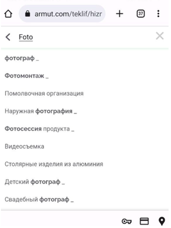

Запитання 4. Кабанчик планує вихід на ринок Туреччини, де основним конкурентом є компанія Armut.com.
- порівняйте сильні та слабкі сторони Кабанчика та Armut.com
- пропишіть стратегію залучення перших користувачів сервісу? Через які канали плануєте
залучати майстрів, замовників? Як виміряти їх ефективність
| Що аналізуємо? | Armut.com | Кабанчик |
|---|---|---|
| Вік домена | 20 років | 7 років |
| Приблизний seo-трафік на місяць | 2,5 млн | 636 тис |
| В seo просуваються: | 210 тис ключових слів (є файл) | 7,5 млн ключових слів (є файл) |
| Технічне seo | Достатньо помилок | Теж є помилки |
| В контекст. рекламі | 2,2 тис ключових слів (є файл) | 6,7 тис (є файл) |
| Як монетизується платформа? | Комісію вносить замовник послуги, а майстер оплачує тільки вартість участі в торгах за замовлення (якщо правильно зрозуміла переклад сайту) | Комісію оплачує майстр, також може робити додаткові платежі, також підключено Google AdSense |
| Програма захисту замовника | До 2000 лір (приблизно 3800 грн) | До 1000 грн |
| Як отримати зароблені через систему гроші? | Гроші поступають майстру одразу на р/р, а не на баланс в кабінеті | Гроші поступають на баланс, вивести можна до 500 грн на карту, якщо більше – то тільки через саппорт |
| Робота з недобросовісними замовниками | З замовника знімається штраф, якщо скасовує замовлення менш ніж за 24 години | Немає штрафів для замовника |
| Базовий розмір комісії | 15% | 10% |
| Соц мережі | Активно ведуть деякі соц мережі | Майже немає SMM |
| Наявність моб застосунку | Є застосунок (на жаль, не змогла завантажити через обмеження по гео) | Є 2 застосунки |
Ринок послуг Туреччини трохи відрізняється від нашого ринку. При плануванні виходу на їх ринок треба дослідити модель бізнесу, сайт, застосунки та методи просування головного конкурента. Відштовхуючись від цього можна розробити якісну маркетингову стратегію.
- Модель бізнесу. Модель Кабачика та модель Армута дуже схожі. Основна відмінність в тому, хто платить комісію платформі. Кабанчику сплачує майстер, а Армуту платить замовник. Якщо я вірно зрозуміла з перекладу сайта, то майстер теж щось платить за доступ до можливості запропонувати свою ставку за роботу (але цей момент треба уточнити). Вважаю, що це є перевагою Армуту. Адже неодноразово натикалася на негативні відгуки по Кабанчику саме через те, що комісію має платити майстер. До того ж, майстрів набагато менше, ніж потенційних замовників, тож напевно, модель Армута більш до вподоби клієнтам.
-
Сайт. Сайти обох платформ схожі між собою. Кожен має свої переваги та недоліки. Недоліками Армуту є те, що немає повноцінного меню з усіма послугами (як на головній сторінці Кабанчика). Ти або тицяєш певну категорію і в ній обираєш, або вже покроково при створенні нового замовлення бачиш всі наявні категорії.
На Кабанчику трохи незручно те, що меню-бургера немає в шапці сайту, де всі звикли знаходити меню. І не одразу зрозуміло (а я вважаю, що має бути очевидно з першого погляду на екран), де реєструватися майстру. Ось тут незрозуміло, я б подумала про більш наглядний варіант.
Також я протестувала як працює пошук на обох сайтах. І теж є питання. Я прикріпляю нижче скріншоти, де покажу, що саме мені не сподобалося. Припустимо, я працює в інтернет-магазині і мені потрібна послуга продуктового фотографа. Я заходжу на Кабанчик і в пошуку пишу «Фотограф».
Мені випадає 5 варіантів і все. Я не можу здійснити загальний пошук і попасти на просто категорію «фотограф» і далі уточнити. Технічно з телефона мені це не дає зробити.
Я попередньо дослідила вже сайт, я знаю, що є і інші категорії у розділі Фотограф.
Тому я починаю гратися із промптами і еврика! На скриншоті нижче мені випало вже щось трохи більш релевантне моєму бажанню.
Зверніть увагу на запит. Клієнт би не додумався. Набагато простішим рішенням було б при запиті «Фотограф» перекинути клієнта на цю сторінку: https://kiev.kabanchik.ua/ua/category/fotograf
Йдемо далі. На сторінці Фотографа розгортається цілий перелік підрозділів. І все би гуд, але чомусь кнопка «Подивитись всі» розташована зліва.
Вважаю, що вона може попадати в сліпу зону, адже за правилами Юзабіліті сайтів відвідувачі читають контент за паттерном літери F. Згідно йому, кнопка має бути розташована праворуч. Також, в цьому моменті я би ще із сеошником порадилась би. Адже при кліці по кнопці перекидає на ще одну сторінку з Фотографом. Виходить, що на сайті вже 2 сторінки, які стосуються послуг Фотографа (загального), але інтент у них один і той самий. Це мала б бути 1 сторінка. Але це лише припущення.У Армута з цим ситуація краща:
 Отже, треба налаштувати збір теплових карт на сайті Кабанчика, подивитися, куди люди ходять і що тицяють, зібрати відповідну статистику і на базі цього внести правки. - Застосунки. На жаль, застосунок Армута ніяк не змогла встановити. Яким би VPN ні користувалася – пише, що у нашій країні цей застосунок недоступний. Обидва застосунки Кабанчика поставила, але порівняти поки що немає з чим. Мені вже підказали спосіб, але часу вже немає, щоб спробувати.
- Просування. Армут отримує основний трафік – органічно. Тільки 2.5 мільйона користувачів заходить на сайт Армута щомісячно! В цьому є заслуга і поважного віку домену – аж 20 років (домен зареєстрований в 2003 році). Також велика кількість вхідних посилань (більше 2000 доменів!). Всього ключів у просуванні 210 тис, що набагато менше, ніж у нас. Ми можемо проаналізувати ключі, по яким вони органічно просуваються і зрозуміти, що користується попитом на турецькому ринку:
Контекстну рекламу він використовує мало, у нього в рекламному просуванні в 3 рази менше ключових слів, ніж у нас. В таблиці нижче також можемо подивитися ключові слова, по яким рекламується Армут:
Аналіз цих таблиць і ключів дасть нам перевагу при плануванні і запуску платформи в Туреччині. Адже точно будемо знати, з яких послуг починати.
У Кабанчика зовсім інша ситуація з ключами, по яким він просувається. Ось, наприклад, його ТОП:
Ключі, які топові в рекламі у Кабанчика:
Як бачимо, геть кардинально відрязняються напрямки.
У Армута багато акантів соц мереж, але по факту активно постить він лише в Інстаграмі та Пінтересті. Фейсбуком та Твітером майже не займаються.
Стратегія залучення перших користувачів
- Розробляємо платформу з правильною структурою (структуру має запропонувати сеошник, використовуючи дані про топові ключові слова основного конкурента). Важливо врахувати, що у Туреччині ціниться логіка та практичність, а не емоційна складова, як люблять у нас в Україні. То ж всі креативи на сайті мають бути максимально логічними. Також одразу треба і додаток запускати, адже зараз 80% людей все роблять зі смартфона.
- Майстри мають реєструватися безкоштовно. Платити комісію будуть замовники, але на перші півроку вона буде мінімальною – пропоную 5%. Було б класно зробити комбо-модель: щоб замовники ставили свою ціну при створенні замовлення, а виконавці могли їм відповідати на запити зі своїми власними пропозиціями. Також за додаткову плату майстри можуть підвищувати позиції своїх пропозицій.
- При запуску платформи треба одразу запустити креатив у ФБ, з таргетомпо професіям, можливо використовуючи профільні групи з призивом безкоштовно зареєструватися на новій платформі, яка скоро вийде з бета-версії. Зробити акцент, що вони будуть першими, хто там зареєструється, а отже і конкуренції за замовлення буде у них менше =)
- Треба буде продумати серію пушів/email, які навчать майстрів користуватися платформою. Якщо у них будуть не заповнені якісь розділи – висилати нагадування, щоб заповнили для кращого рейтингу (наприклад).
- Паралельно до таргету в ФБ – ми запускаємо його і в Інсті. Але попередньо треба створити турецький акаунт і наповнити його першим контентом. Рекламуватися в інсті з пустим акаунтом не треба.
- Паралельно в Гуглі запускаємо контекстну рекламу на пошук майстрів. Гугл займає долю майже в 70% серед пошукових систем Туреччини. Ще 30% займають Яндекс (20%) та Turkcell Arama (10%). Яндекс тестити якось не хочеться, а ось погратися з чисто турецькою пошукової системою Turkcell Arama – цілком можливо. У них є офіційна онлайн-платформа для реклами "Turkcell Reklam Hizmetleri" (Turkcell Advertising Services). Можна буде вивчити і спробувати налаштувати там рекламу.
- Сеошник в цей час буде займатися оптимізацією сайта та лінкбілдінгом. У Армута технічне seo не дуже добре себе почуває, і лінкбілдінг чомусь хромає. Тож можемо скристатися цим і зробити краще. Це нам дасть перевагу проти їх трастовості через вік домену.
- Коли на платформі буде вже достатня кількість майстрів – починаємо активно залучати для них замовників. Таргет, контекст + використовуємо турецьких блогерів. Блогери завжди люблять все нове на ринку.
- Можна, як варіант, скористатися промо-активностями на профільних виставках. Наприклад, якщо ми знаємо, що буде виставка або конференція для електриків/сантехників і тд – ми або виступаємо там спонсорами, або роздаємо листівки, де розказуємо про наш сервіс. Але тут треба вже буде їхати у відрядження (якщо у нас буде стенд) або наймати агенцію, яка зможе організувати все без нашої особистої участі. Трекати ефективність цього методу залучення майстрів можна буде через промокоди: якщо введуть промокод з листівки (буде 1 промокод на 1 виставку) – то ми нараховуємо їм якийсь бонус, який вони зможуть використати для підняття своїх цінових пропозицій (наприклад). Для всіх інших активностей, описаних вище, не буде складно порахувати ефективність – це все діджитал-канали, які прораховуються завдяки Аналітиксу і ютм-міткам.